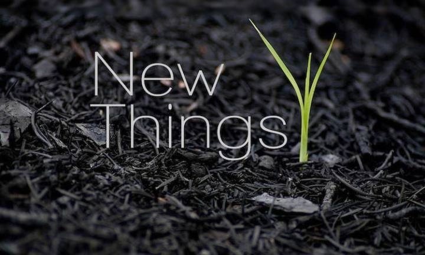

当我们做出选择改变时，不知道将会得到什么，但很清楚将会失去什么。

回想一下，是不是或多或少会有一些类似的场景，当出现一个新的偶像明星时，特别是帅的或漂亮的，会迅速的下一个判断，觉得没有真才实学全靠包装，觉得他们的粉丝都是脑残；在玩LOL或王者时，被对面强势英雄干的很惨，是不是每次先把自己觉得打不过的ban掉，却很少去主动练习这类强势英雄；当一项新技术、新设计、新政策出现时，网上和我们身边，往往会充斥着吐槽、抵制的声音，往往要很长一段时间才会变成真香，例如当年汽车诞生时的《红旗法案》。
上述的这类例子数不胜数，笔者有时候会觉得自己是不是没有跟上这个时代的节奏。所以将这种下意识的心理活动拿出来分析下，一家之言，不必当真。
认识的一位博学大佬，在分析人的行为时，经常会用进化论来分析，学到很多。细想了下，这种抵触心理一样可以用进化论来解释，在人类茹毛饮血的时代，危机四伏，尝试新事物往往意味着未知的风险，而不去尝试则风险会小很多，所以对未知的恐惧就写入了我们的基因里，一直到今天。
从人的内心来看，接受新的事物，本质是和旧的自己对抗，而与自己做斗争往往是最难的。这个旧的自己，我把它理解为成见，在《哪吒之魔童降世》里有句话感触很深：“人心中的成见是一座大山，任你怎么努力都休想搬动。”
但从笔者自身来看，却不是对所有的新事物都会产生抵触心理，在那些自己比较熟悉的领域，往往会有相反的状态，努力去学习最前沿的技术，希望出现使生产力更高的事物。这么看来，我们对新事物的抵触往往是出现在那些陌生或者简单了解的领域，而在这些领域，经常会出现轻视的情况，对自己简单了解的事情轻易的做出判断，在韩寒的《我也曾对那种力量一无所知》一文中详尽道出。
在想明白了这些后，也就理解了为什么还有那么多人在吐槽“拥抱变化”这条价值观，拥抱变化说到底也是让我们去积极拥抱新事物。因为当我们做出选择改变时，不知道将会得到什么，但很清楚将会失去什么。
古有“昔有学步于邯郸者，曾未得其仿佛，又复失其故步，遂匍匐而归耳。” 近有“穷则变，变则通”。有个寓言故事《谁动了我的奶酪？》，说的也是这个道理。
在这段时间里，笔者尝试着去改变，在面对新事物的时候，下意识的告诉自己去试一试，说不定是新的世界。当抖音、头条兴起的时候，在简单的使用过后，武断的下了“没有营养的APP”的结论，但是就是这样的业务，火遍全球，成为国内互联网公司出海比较成功的一个，背后的价值需要去深入思考（当然笔者现在还是觉得比较浪费时间），但是短视频、vlog等新的信息载体要尝试主动去拥抱。还有AI、5G等等，Elon Musk的风格是值得学习的。
生活中也有一些尝试，听歌的时候也会点开“今日流行”歌单盲听；在股市、币市里投了一点钱尝试去感受这个领域的变化；也有尝试着去融入00后的圈子，感受时代的变化，等等。
~~注：本文是笔者睡前随笔，不带有任何观点
本文由 蓝骨
创作，采用 知识共享署名4.0 国际许可协议进行许可
本站文章除注明转载/出处外，均为本站原创或翻译，转载前请务必署名
最后编辑时间为: 2020-08-24T10:49:23+08:00